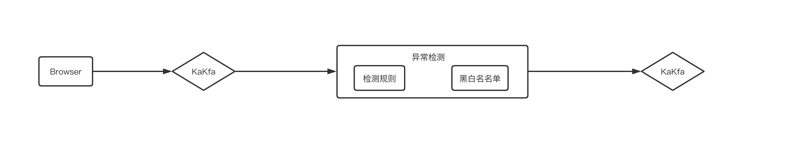
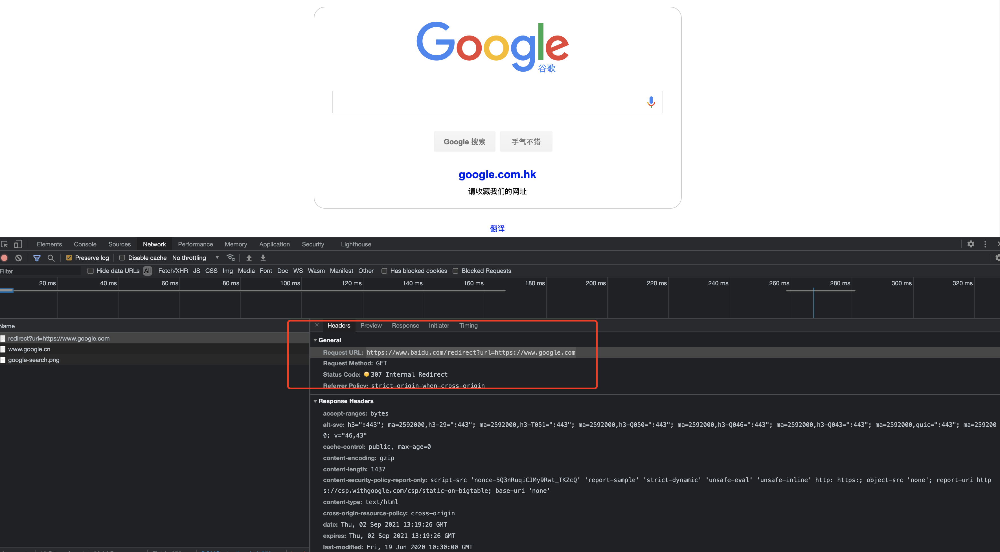

恶意Chrome插件绕过CSP
目前笔者对于Chrome浏览器恶意插件的检测方式为行为特征结合简单的静态分析为中，如CSP对主要的应用页面的请求做拦截、告警同时检测其manfiest.json申请的权限等做简单分析。
目前CSP分析方式
告警主要以在线流式告警为主

在处理CSP告警时发现一个相对有趣的点，某个插件前一日有大量的CSP拦截告警，而次日告警大幅度缩小时但是通过其他方式验证该插件仍然在大量正常使用
通过background.js绕过CSP
因为chrome浏览器可以有高权限，可以有多种方式绕过CSP策略，甚至可以通过Disable Content-Security-Policy插件关闭CSP策略。而在这次case中该插件使用在background跳转的方式去绕过CSP策略。
在chrome插件中不同的内容会有不同的CSP策略做限制，而非均受原有页面的CSP策略影响
- 扩展自身页面如后台页面受到自身CSP策略影响，即manifest.json的CSP配置，在manifest_v2版本下，CSP默认策略为：content_security_policy: “script-src ‘self’; object-src ‘self’”
- 注入脚本上下文不受CSP约束
- 注入的DOM中的脚本受到原有页面的CSP策略影响
而在此次Case中，首先浏览器插件在manifest.json中申请{“permissions”: [“webRequest”]}，然后在background.js使用addListener()函数为WEB请求注册事件侦听器做特定url 307跳转实现CSP绕过。
addListener()、请求在浏览器侧的流程及相关事件触发可以参考Chrome Developers
background.js事件侦听方法
1 | chrome.webRequest.onBeforeRequest.addListener( |
即实现访问https://www.baidu.com/redirect?url=https://www.google.com会跳转到https://www.google.com

然后注入的脚本如
1 | <script src="https://www.baidu.com/redirect?url=https://www.google.com"> |
可以绕过原有页面的CSP限制